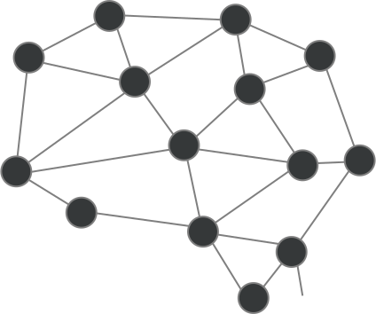

A gépes neurális hálózatok a mesterséges intelligencia egyik legfejlettebb területét képviselik, melyek az emberi agy neuronhálózatainak működését utánozva képesek komplex feladatok megoldására. Ezek a hálózatok rétegekből állnak, ahol minden rétegben neuronok találhatók, amelyek a bemeneti adatokból súlyozott összegzést végeznek, majd aktivációs függvények segítségével továbbítják az információt a következő réteg felé. A tanulási folyamat során a hálózat folyamatosan módosítja súlyait a hibák minimalizálása érdekében, így egyre pontosabb előrejelzéseket és döntéseket képes hozni.